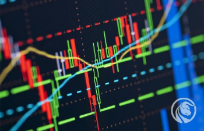

Los mercados son el espacio físico o virtual o ambos en donde se realizan los intercambios de instrumentos financieros y se definen los volúmenes de operación y sus precios. Las funciones de los mercados son: Establecer los mecanismos que posibiliten el contacto entre los participantes en la negociación.
¿Que son los mercados?
¿que significa volatilidad en los mercados?
Los mercados volátiles se caracterizan por cambios de precios extremadamente rápidos y un alto volumen de operaciones, lo que se considera que aumenta la probabilidad de que el mercado realice movimientos de precios considerables e imprevistos.